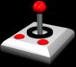
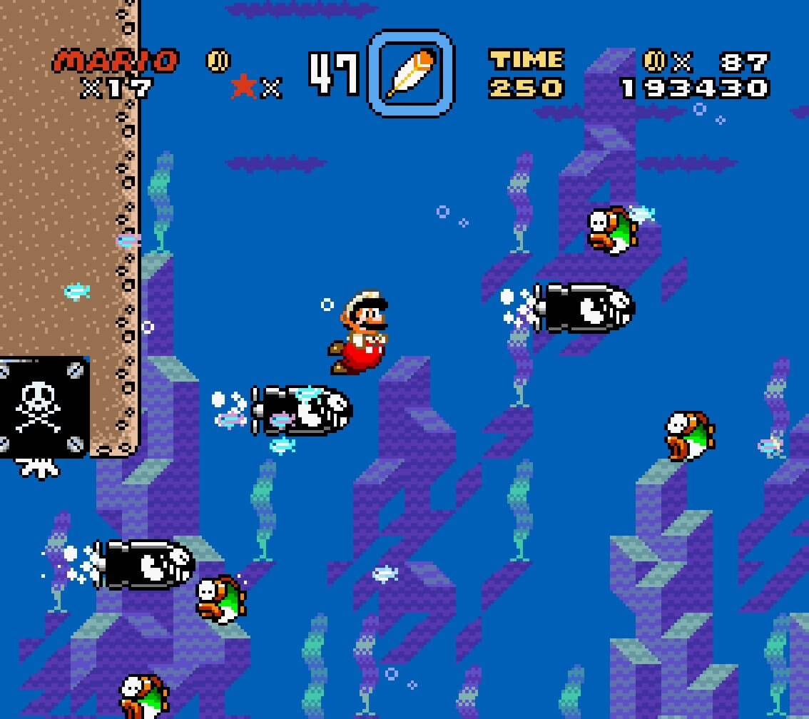
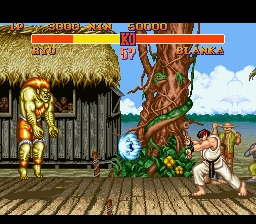
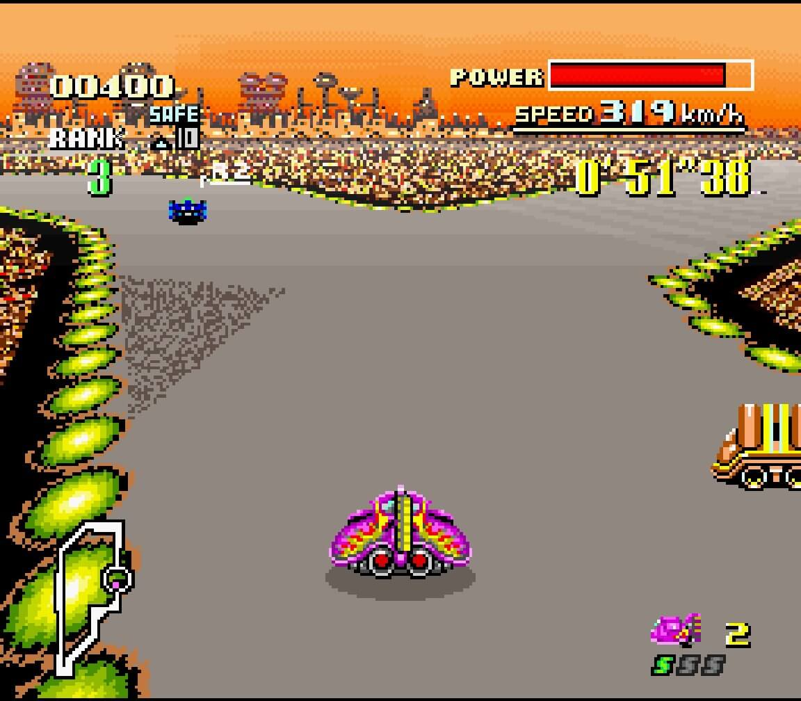
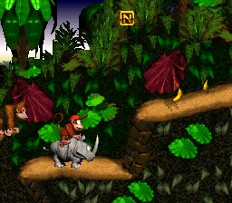
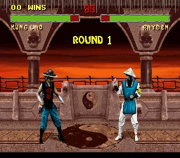

[GIF joystick/controle 80x80]'">
 !! OS MELHORES JOGOS !!
!! OS MELHORES JOGOS !!

|
 [IMAGEMSuper Mario World 160x120]'"> ★★★★★ LANCAMENTO |
SUPER MARIO WORLD
Nintendo • Super Nintendo • 1990
O MELHOR jogo do SNES sem duvida nenhuma!! Mario e o Yoshi juntos numa aventura
incrivel pelo Reino dos Cogumelos!! Sao 96 fases (isso mesmo, NOVENTA E SEIS!!)
cheias de segredos, saidas secretas e mundos escondidos.
Nota do Marcelo: 10/10 - OBRA PRIMA!!
|
|
 [IMAGEMStreet Fighter II 160x120]'"> ★★★★★ LUTA |
STREET FIGHTER II: THE WORLD WARRIOR
Capcom • Super Nintendo • 1992
HADOUKEN!!!! O jogo que todo mundo jogava!! A versao do SNES e MELHOR
que o arcade disseram alguns especialistas (nao todos hehe).
Nota do Marcelo: 10/10 - CLÁSSICO ETERNO!!
|
|
 [IMAGEMF-Zero 160x120]'"> ★★★★★ CORRIDA |
F-ZERO
Nintendo • Super Nintendo • 1990
VELOCIDADE PURA!! F-Zero usa o famoso Modo 7 do SNES para criar
uma experiencia de corrida futurista NUNCA VISTA ANTES!!
As naves voam a mais de 1000km/h em circuitos espaciais incrivos.
Nota do Marcelo: 9/10 - Dificil demais na ultima
fase!!
|
|
 [IMAGEMDonkey Kong Country 160x120]'"> ★★★★★ EXCLUSIVO SNES |
DONKEY KONG COUNTRY
Rare / Nintendo • Super Nintendo • 1994
Os graficos deste jogo SAO INCRIVEIS!! Parece quase 3D!! A Rare
usou uma tecnica chamada "pre-renderizacao" que deixou todo mundo
de queixo caido quando saiu.
Nota do Marcelo: 10/10 - Graficos do FUTURO!!
|
|
 [IMAGEMMortal Kombat II 160x120]'"> ★★★★☆ +18 |
MORTAL KOMBAT II
Midway / Acclaim • Super Nintendo • 1994
FINISH HIM!! O jogo que causou CONTROVERSIA no mundo inteiro!!
A versao SNES tah muito fiel ao arcade, com todos os golpes, personagens e ate os
fatalitys11!
Nota do Marcelo: 9/10 - Falta sangue na versao
SNES!!
|